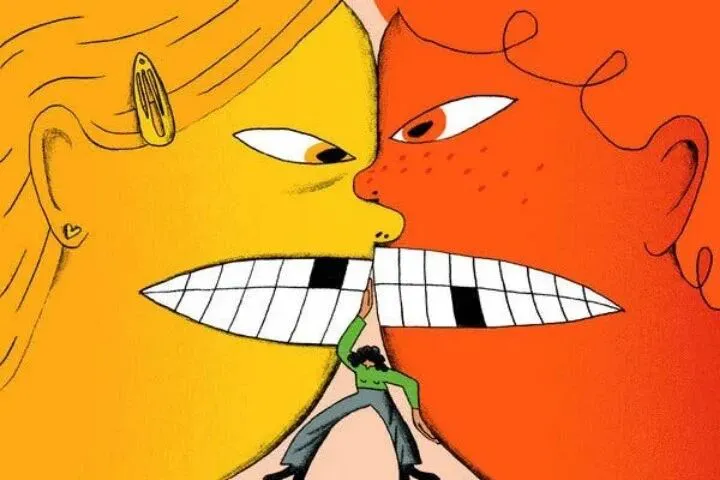
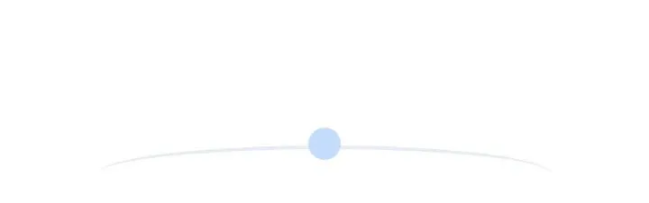

文|圆圈妈妈
网图|侵删
#先插播一则群通知#：第21期双胞胎跳蚤市场群已开放，公众号输入“赶集21”，扫码即可入群。

我们家的双胞胎，是两男孩，今年7岁。
意思是：在过去的7年里，我们家每一天都是吃饭睡觉干架斗斗小嘴。
以前，没经验，只要有一个孩子跑过来告状，我就会立刻介入，找出到底是谁的错，不然决不罢休。
那真是个让人头疼的过程。
因为不了解前因后果，总是被他们牵着鼻子走，听他们互相扯皮，最后就不了了之。
我高声训斥过，警告过，甚至还威胁，打骂过孩子。每次这么闹腾一番，影响得我一整天都不高兴。
后来，我麻木了。
哦，不对，是学精了（当双胞胎的妈妈，没有两把刷子怎么好意思出来混？）
我试着告诉他们:“我相信你们自己可以处理。不要老“喊妈”。
接下来，不论两兄弟再说什么，再闹什么幺蛾子，哪怕打得锅碗瓢盆叮当响，整个屋子都在颤抖...只要在安全范围，我都忍住，忍住，忍住！
保持沉默，不再干预。
很快，我发现自己有进步了，从开始只能忍5分钟，慢慢地到10分钟，接着突破30分钟，到最后，可以饶有兴味地欣赏他们的拌嘴，或者当他们俩是空气，气定若闲地做自己的事情。
我想我已经能够做到对孩子们的事情放手了。
与此同时，我发现，孩子们也几乎不再来找我告状了，也不需要我替他们做主，即便是两人纷纷挂彩了，都私底下和好，懒得找我求安慰了。
有一天，我听到圈圈对圆圆说:“看你干的好事，把我的积木推倒了，我要去告诉妈妈，让她惩罚你!”
圆圆满不在乎地回答:“那你去告呗，反正妈妈不会管，她肯定又会说：你们自己可以处理。”
当我听到这个对话时，内心澎湃不已，我简直无法用语言来描述这个新行为给我带来的改变。
我终于不用再纠结地想，我究竟要站在谁那边；我也不用再为一碗水如何端平而殚精竭虑了。
我现在真正明白了，圈圈其实比我想象的更有能力去捍卫自己的权益。
他并没有真的来找我告状，而是把散落一地的积木都让给了圆圆；而圆圆呢，其实并非有意搞破坏，他只是单纯地想要圈圈的一块积木来完成他的作品而已，他最后很贴心地用剩下的积木重新拼搭了个新造型送给圈圈。
两人就这样和好了。
我现在非常坚定地相信，父母不用干预孩子间的冲突。不仅仅是为了孩子们好，还能减少90%没必要的家庭紧张。
也许你会说，圆圈兄弟都这么大了，知分寸，那些才一两岁的双胞胎咋办？咬你没商量，打你往死里打，总不能见死不救吧？
对很多双胞胎父母来说，接受“双胞胎之间的争执冲突不关我的事”，确实很难！
手心手背都是肉，看着孩子们互相伤害，难受心痛是必然的，我也曾经历那种两难境地和纠结。
圆圈兄弟现在学会了妥协和退让，有争执或是意见不合都能友好协商，并不是一朝一夕的，而是一个量变到质变的过程。
这里面有他们两兄弟的努力，也有我自己的坚持。那就是，孩子们有冲突时，坚持一个原则，不插手，不评判，不站队。
每个人的行为都有目的性，一两岁的双胞胎发生冲突的动机，大概率是想引起父母的关注。
当孩子们出现争执推搡时，父母得忍住本能的冲动，保持镇定，不要紧张或激动，不用多说话，更不要大惊小怪；若觉得危险了，就平静地把他们暂时性分开，然后当没事发生一样，继续做自己的事情。
如果你还想做点什么，那么你可以在发生冲突之后，与孩子们一起讨论解决冲突的办法。
讨论的方式可以多样化，这取决于你和孩子们之间的日常沟通模式，可盐可甜...
但宗旨就是，这个讨论不应带有任何指责和说教的意味，且不应该在冲突进行时。
我和圆圈兄弟的讨论方式有点损，有点坑，但效果很显著，还发展出两人对手足的责任感。
我让他们俩站在一个高凳子上，抱成一团，设定时间3分钟，如果期间有人掉下来了，那就加时到5分钟，8分钟...以此类推。
完了之后，我让他们自己总结，有什么办法让自己不掉下来？
他们的回答让我很满意：紧紧抱住对方，不要让对方掉下来。
我顺势告诉他们，解决冲突也是一样的，多替对方想想，你让一步，我退一步，就好了。

不论孩子们发生冲突的原因是什么，父母帮着孩子调解扯平或是进行决断，只会让问题更严重。
这正好解释了，为什么双胞胎之间老打架，屡禁不止，用尽了各种办法想阻止孩子们之间的战争，可结果还是战争照旧。
当父母干预孩子们之间的冲突时，其实是在剥夺他们自己学习解决冲突的好机会。
就好像，教孩子们独立穿衣吃饭一样，你得放手让他们自己去尝试做了，他们才能学会，那么教会他们处理冲突事件也是一样的道理。
与其花时间去调停孩子们之间的争执，苦口婆心地教孩子们和睦相处，还不如坚持自己的底线：
拒绝做孩子们的端水大师！
不插手，不站队！
如果你还在迷茫纠结中，那么来我们的双胞胎教育群抱团取暖吧！
-END-
今日互动话题
#双胞胎发生争执，你会怎么处理？#
评论区聊一聊呗！
微信公众号：孖仔帮
ID : twinsbang
专注双胞胎孕育，养育，教育经验分享
扫码关注我们
点一下你会更好看耶